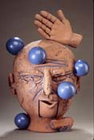
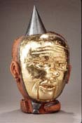
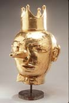
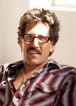
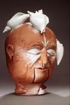
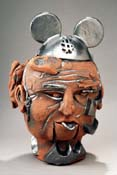
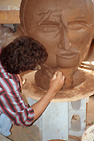

| Stan Welsh
American ceramic sculptor.

American
ceramist and teacher Stan
Welsh received his BFA at the Kansas City Art Institute
in 1974 and his MFA at the New York State College of Ceramics at
Alfred University in 1978. He has taught at San Jose State University,
California since 1981. He has received several grants and awards,
including an *NEA grant in 1986, a California Arts Council Grant
in 1990.
In the 1980s
Welsh made large, stylized narrative terracotta head forms with
heavy incising and carving filled with brightly colored glazes.
His work then became more monochromatic, incorporated other materials
and referenced social and political issues. Starting in 2000
Stan began working on a series of heroic terracotta heads (4 or
5 times life scale) that are the most representational work he has
done to date. These highly expressive heads with intense facial
expressions representing a wide range of human emotions were featured
in an exhibition at the Daum Museum in Missouri in 2004. The show
was titled "Bay Area Ceramic Sculptors" and included the
work of Arthur Gonzalez, Annabeth Rosen, Nancy Selvin and Stan Welsh.

In this recent work Welsh continues to investigate social and political
issues. Welsh lives and works at his studio in Santa Cruz, California.
He will be exhibiting his current work in a solo exhibition at the
Santa Cruz Museum of Contemporary Art from January to April 2005.
Artist's Statement
My
work has evolved through many different phases or variations on
theme and style. In the mid 80s to 1990 the theme of my work was
large abstract head forms made out of terra cotta clay. The surfaces
were heavily incised and carved with images and subconscious narratives.
The incised lines and surface textures were filled with brightly
colored glazes leaving the background or exposed areas as raw terra
cotta or brown clay. The emphasis on these sculptures was as much
on the surface drawings as on the forms themselves.

From 1990-95 the clay forms became more monochromatic and I included
a wide range of mixed media with the clay such as branches, sheet
lead, photographs, books, and a wide range of found objects. This
work remained autobiographical but also made reference to social
and political issues which the earlier work did not.
The
recent work started in 1995 represents a two-year transition or
search for new meaning and direction in my work. The work has returned
to an autobiographical quest making many references to myself and
my life using a wide range of images to explore personal, psychological,
and emotional content. The recent work is made with terra cotta
clay and then glazed with very thick color saturated satin matt
glazes. The surfaces are very smooth and the images that I use are
much more specific than in past work. The emphasis of this new work
is on form and in bringing together complex relationships of space
and form with these saturated satin matt surfaces.
Images and statement courtesy Stan Welsh. ©
.
More Artists of the Week
More Articles
|
{kind=link}
{kind=link}
{kind=link}
{kind=link}
{kind=link}
{kind=link}